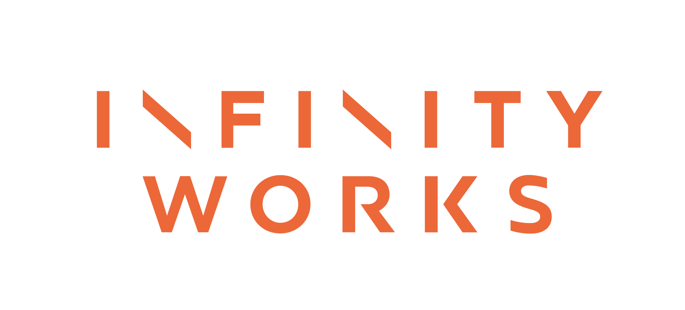

class: center, middle # Go 1.8 Release Party # #GoReleaseParty --- # Thanks to... <div align='center'>  </div> For sponsoring the venue and the bar tonight, and the speakers. --- # Tonight! - Adrian Hesketh - Why bother learning Go? - Alan Raison - Go at Hitachi Capital - Hands-on coding, get to grips with some problems - Have a drink --- # Things to do to learn Go - http://exercism.io/ - https://www.codeeval.com/ - https://tour.golang.org/welcome/1 - Now - Get help from volunteer "Gophers" around the room and tackle some problems. - Later - Read "The Go Programming Language".